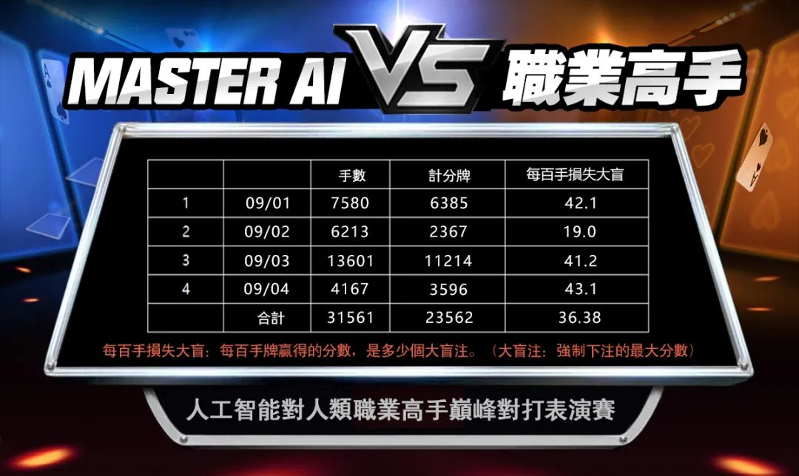

CFR 与策略平均
围绕遗憾匹配、博弈树、抽象和策略生成组织核心计算。

Research Scope
项目结合 C++ 核心计算和 Python 训练编排，包含扑克规则、反事实价值、强化学习、机器人策略、IPC、Protobuf、Redis、测试和 benchmark 目录。
Core Components
围绕遗憾匹配、博弈树、抽象和策略生成组织核心计算。
通过 CFV 和神经价值组件估计状态与行动的长期价值。
结合监督策略、对手策略和训练编排探索策略改进。
基于公共状态和局部搜索思路生成当前决策。
分离项目报告结果与可复现结果，记录版本、配置和统计不确定性。
涵盖 IPC、Protobuf、Redis、房间逻辑和 Python 服务脚本。
Decision Pipeline
具体收敛性和性能取决于实现、抽象、函数逼近、训练过程与评估协议。
规则、历史和公共信息。
遗憾更新与局部策略。
反事实价值与模型输出。
根据策略分布生成行动。
对手、指标和可复现日志。
Project Evidence